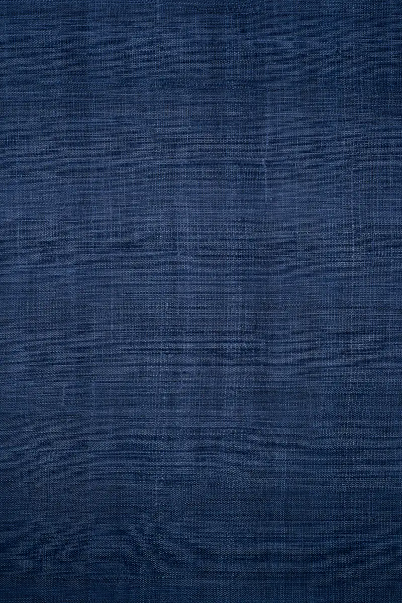
01 / 09 · 오방색
청 푸른빛
동쪽 · 나무(木) · 봄
새순이 트는 쪽의 빛.
처음을 감싸는 색.
모시 · navy
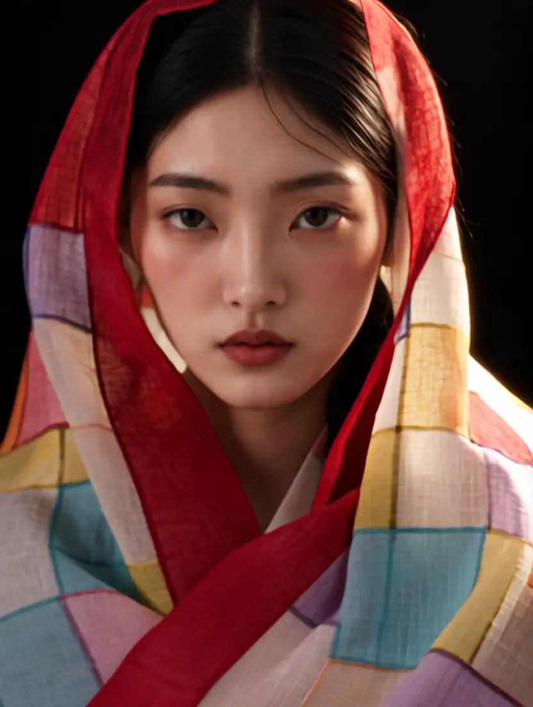
제30회 정기전 · 2026
가장 귀한 것을 감싸다
02 배경
쓰고 남은 천을
버리지 않았다.
작고 모난 조각을
한 땀, 한 땀 이어
한 장의 보자기로 지었다.
그 천으로
가장 귀한 것을 쌌다.
그리고, 건넸다.
감싸는 일은
아끼는 일이었다.
그래서 바꾸어 보았다.
감싸는 것을, 물건에서
사람으로.
가장 귀한 것은
언제나 사람이었으니까.
그리고 지금,
이 보자기를 펼친
당신까지.
03 아홉 가지 색
조각과 조각 사이를 바느질이 잇듯,
QR에 쓴 아홉 가지 모시는
오방색 다섯과, 그 사이를 잇는 색 넷이다.

01 / 09 · 오방색
동쪽 · 나무(木) · 봄
새순이 트는 쪽의 빛.
처음을 감싸는 색.
모시 · navy
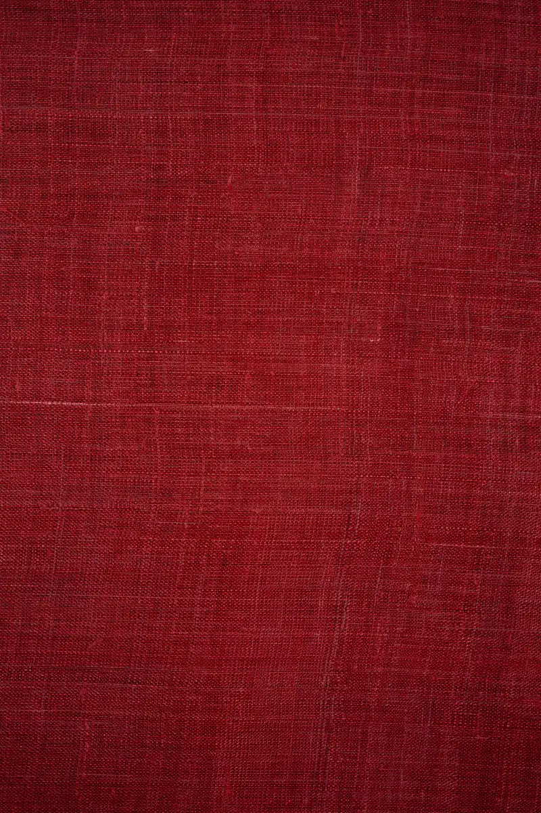
02 / 09 · 오방색
남쪽 · 불(火) · 여름
나쁜 기운을 물리는 빛.
지키고 싶은 마음의 색.
모시 · red
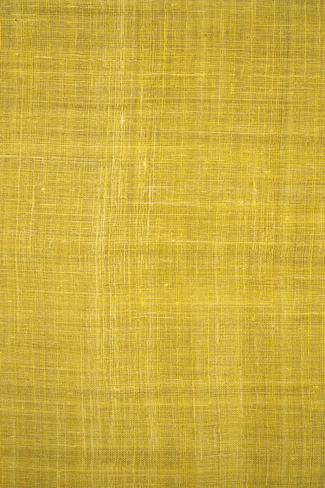
03 / 09 · 오방색
가운데 · 흙(土)
사방이 모이는 한가운데.
감싼 것의 중심에 놓이는 색.
모시 · yellow
04 / 09 · 오방색
서쪽 · 쇠(金) · 가을
물들이지 않은 모시의 바탕.
아무것도 더하지 않은 처음의 빛.
모시 · raw (생지)
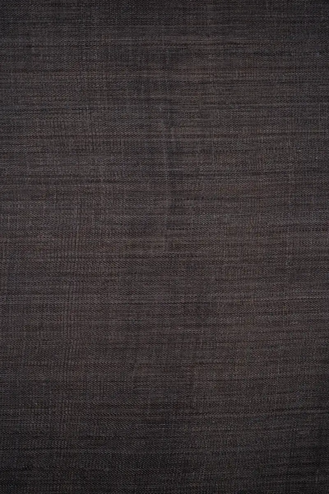
05 / 09 · 오방색
북쪽 · 물(水) · 겨울
먹이 번지듯 깊어지는 색.
모든 빛을 품고 고요해진다.
모시 · ink
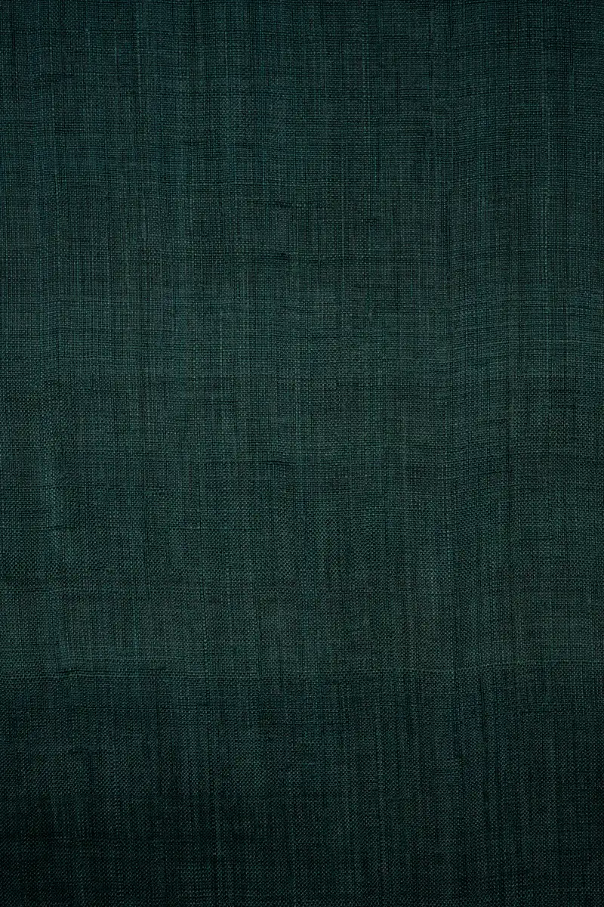
06 / 09 · 오간색
청과 황 사이
봄빛이 흙에 내려앉아 자란 색.
곁에서 오래 자라는 마음.
모시 · green
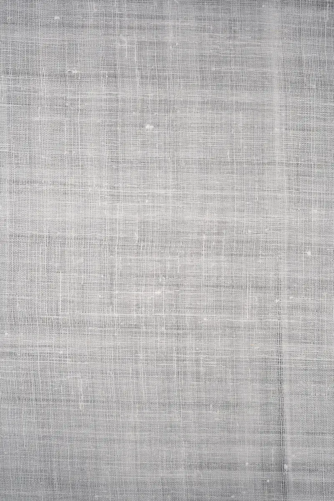
07 / 09 · 오간색
청과 백 사이
흰 바탕에 푸른 기운이 옅게 스민,
새벽녘의 빛.
모시 · gray
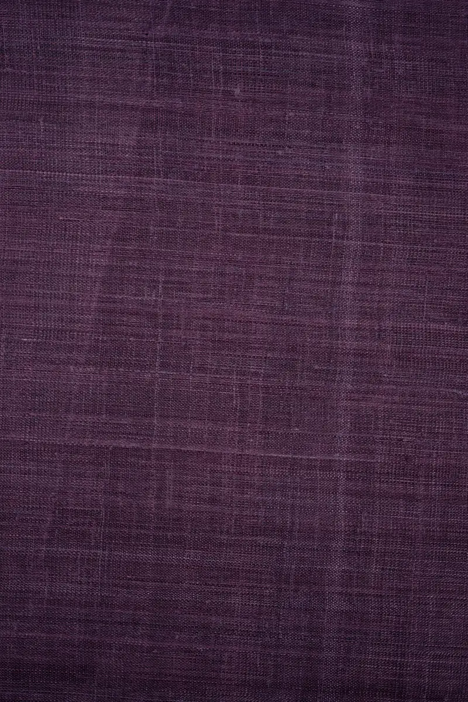
08 / 09 · 오간색
적과 흑 사이
불과 물이 만나 깊어진 색.
뜨거움이 가라앉은 자리.
모시 · purple
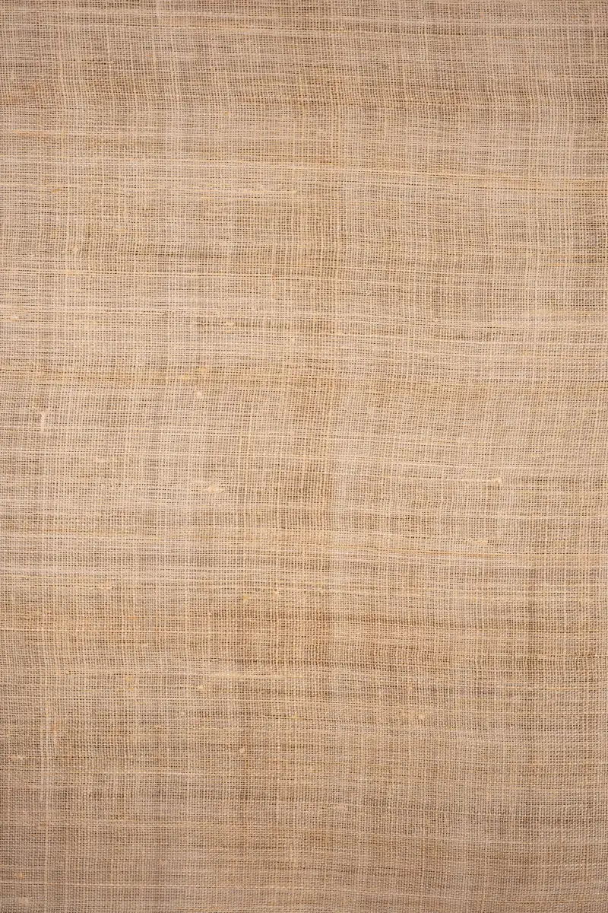
09 / 09 · 오간색
황과 흑 사이
해 질 녘의 흙빛.
손때 묻은 시간이 머무는 색.
모시 · sand
04 사진
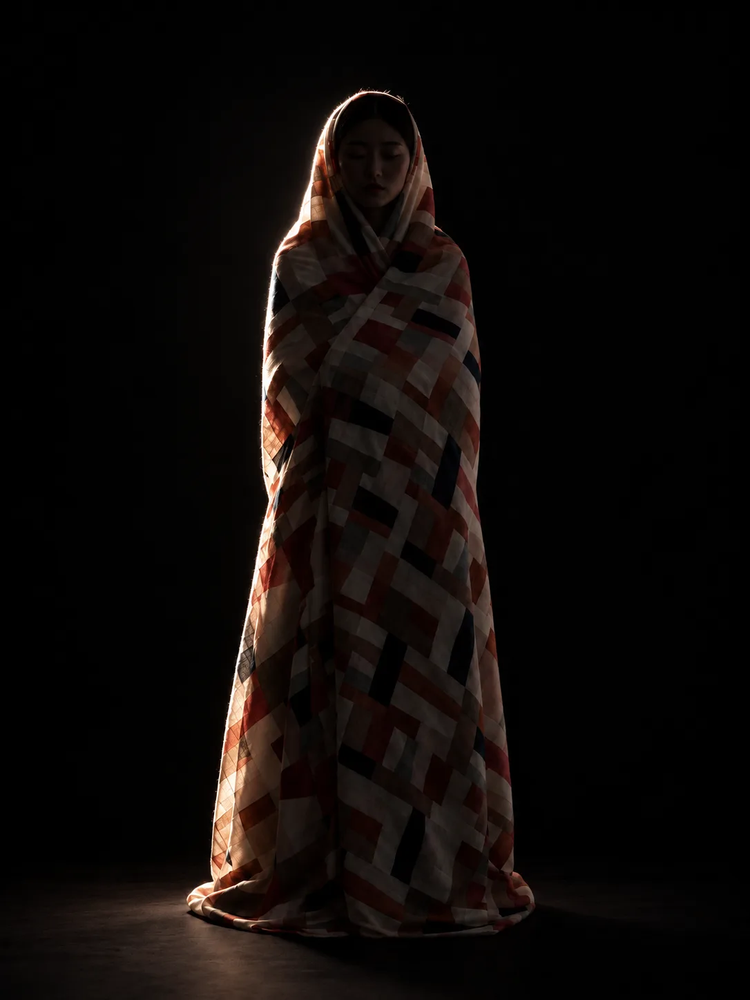
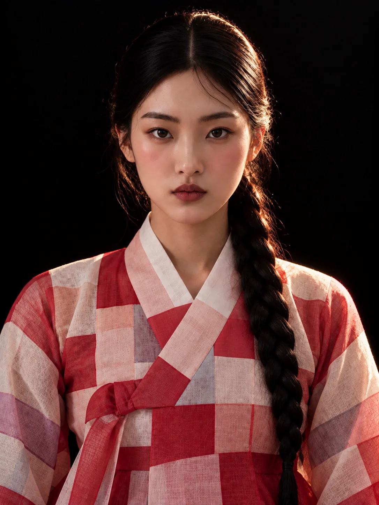
01
눈을 감는다.
천이 먼저 안아 준다.
02
시선을 내린 채,
아직 꺼내지 않은 말을 머금는다.
03
천을 걷고,
비로소 당신을 본다.
04 사진
모아 보기 눌러서 크게
01 감싸다
02 머금다
03 마주하다
04 그리고, 서다
05 QR
06 전시 정보